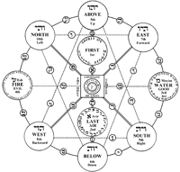

Trees of Life from the Book of Sefer Yetzirah
After the Sefer HaShmoth (Book of Names) and ancient portions of the Torah that pre-date Master Mosheh, the Sefer Yetzirah (Book of Formation) is the oldest book of the written Mystical Qabalah, dating to the times of and attributed to Master Abraham. The Sefer Yetzirah is a manual on the mystical nature of the Hebrew alphabet recorded by Master Abraham in the original Sinatic Hebrew alphabet. The Sefer Yetzirah presents a number of unique forms of the Tree of Life.
The first of the six chapters of the (Sefer Yetzirah) begins: “By thirty two wonderful paths of wisdom hy, hvhy of Hosts, Elohim of Israel, Living Elohim, and Eternal King, El Shadai, Merciful and Gracious, High and Uplifted, Who inhabits Eternity, Exalted and Holy is His Name, engraved. And He created His universe by three signs: by border and letter and number.”
The
“thirty-two paths” which comprise the Tree of Life are the ten Sefiroth (tvrpc,
lit. Spheres) and the twenty-two release gates interconnecting the Sefiroth. The
gates are the twenty-two Hebrew letters (see
Diagram). 
){kind=link}

“There are Ten Intangible Sefiroth (hmylb tvrypc rsi, Eser Sefiroth Belimah) and Twenty-Two Letters are the Foundation (dvcy tvytva ,ytsv ,yrsi, Esrim Ooshtayim Autiot Yesod): Three Mothers (tvma sls, Shalosh Imote) and Seven Double Letters (tvlvpk ibs, Shevah Kuhfoolote) and Twelve Simple Letters (tvuvsp hrsi, Esrae Puhshootote).” (Sefer Yetzirah 1:2)
The
verses beginning with “Ten Intangible Sefiroth” generally allude to various
forms of the Tree of Life, some of which are unique to this book. We mentioned
earlier that the Sefer
Yetzirah is the textual
source for the six-pointed star, commonly known as the “Star of David.” The Star
of David, a two-dimensional symbol composed of two interlocking triangles, is
easily the most recognizable symbol of the Jewish religion. This way of viewing
the star certainly presents a wealth of interpretative possibilities. The Sefer
Yetzirah yields two
forms of the six-pointed star as Trees of Perfection. The first is a flat,
circular form (see
Diagram). The second presents the star as two interfacing pyramids
containing the ten Sefiroth and the letter-gates (see
Diagram).  By
way of comparison, it is interesting to note that the six-pointed star is also
an ancient and important symbol in the North Indian Tantric tradition, dating
back to the second millennium BCE. In the Tantric tradition, it is associated
with the Anahata Chakra in
the heart center.
By
way of comparison, it is interesting to note that the six-pointed star is also
an ancient and important symbol in the North Indian Tantric tradition, dating
back to the second millennium BCE. In the Tantric tradition, it is associated
with the Anahata Chakra in
the heart center.
){kind=link}
The Sefer Yetzirah also describes a flat, vertical version of the Tree of Perfection. As with other flat Trees, two of the “Inner Court” Sefiroth (Water/Good and Fire/Evil) are moved into the side columns, with the gates adjusted accordingly (see Diagram). The names of the Sefiroth in the Sefer Yetzirah are based on the elements (Spirit of Living Elohim, Air, Water, Fire), or alternately, on the four “Heads of Celestial Messiah” (First, Last, Good, and Evil), and the six directions (Above, Below, East, West, North, South).
The six directions are sealed through permutations of the Name vhy. The final Heh h of the Name hvhy is dropped due to the fact that the action is occurring in the astral World of Yetzirah.
 “There
are (Ten
Intangible Sefiroth) whose
measure is ten without end: Depth of First and Depth of Last, Depth of Good and
Depth of Evil, Depth of Above and Depth of Below, Depth of East and Depth of
West, Depth of North and Depth of South. Lord, Only One, El, Faithful King rules
all of them from His Holy Dwelling Place unto Eternity.” (see
Diagram) Yetzirah. “These Ten Intangible Sefiroth are (ONE) -
Spirit of Living Elohim,
Air from Spirit, Water from Air, Fire from Water, Above and Below, East and
West, North and South.”
“There
are (Ten
Intangible Sefiroth) whose
measure is ten without end: Depth of First and Depth of Last, Depth of Good and
Depth of Evil, Depth of Above and Depth of Below, Depth of East and Depth of
West, Depth of North and Depth of South. Lord, Only One, El, Faithful King rules
all of them from His Holy Dwelling Place unto Eternity.” (see
Diagram) Yetzirah. “These Ten Intangible Sefiroth are (ONE) -
Spirit of Living Elohim,
Air from Spirit, Water from Air, Fire from Water, Above and Below, East and
West, North and South.”
){kind=link}
The second chapter of the book is keyed to the root phrase:: “Twenty-two letters are the foundation.” It describes the letters as the basis for everything that is formed, and presents the image of a wall bearing two hundred and thirty-one two-letter permutations (see Diagram). Some of these twoletter roots are known Hebrew “words” with literal and hidden meanings, and some are unknown. “
){kind=link}

Twenty-Two Letters are the Foundation: He engraved them, He hewed them out, He combined them, and He set them at opposites, and He formed through them everything that is formed and everything that is destined to be formed.” (Sefer Yetzirah 2:2)
Twenty-Two Letters are the Foundation: He set them in a cycle like a kind of wall with two hundred and thirty one gates... And it (the cycle) rotates forward and backward... and thus everything that is formed and everything that is spoken goes out from One Name (i.e. hvhy).”(Sefer Yetzirah 2:4)
The third chapter is keyed to the root phrase: “Three Mothers Alef a Mem m Shin s.” The Mother Letters are the gates among the Sefiroth of the “Inner Court” of the Tree (First, Last, Water, Fire). These letters are discussed in relation to the universe— Heaven, Earth, and the space between them, the seasons of the year (hot, cold, temperate), and the body of male and female (head, belly, and the Geviyah). Verses in both the third and sixth chapters mention “fathers” born from the archetypal elements of the Mother Letters. From the Air (ryva, avir) of Alef a comes the father “Space;” from the Water (,ym, mayim) of Mem mcomes the father “Matter;” and from the Fire (sa, esh) of Shin s comes the father “Energy” or “Motion.” “...And from Him go out Fire and Water, dividing into male and female. Three Mothers Alef a Mem m Shin s are their foundation, and from them are born fathers, from which everything is created.” (Sefer Yetzirah 3:2)
The fourth and fifth chapters are
respectively keyed to “Seven Double Letters” and “Twelve Simple Letters.” On the
Tree, six of the Double Letters connect the Inner Court to the six Directional
Sefiroth via the Holy Temple, represented by the seventh Double Letter Tav t (see
Diagram).  The
action of the Directional Sefiroth is alluded to as the “Living Beings (tvyx,
Chayot)” mentioned in the Torah and
the Book of Ezekiel.
“AndElohim said the waters
will swarm with the movement of (Chayah)”.“And
the (Chayot) run
forth and return.”
The
action of the Directional Sefiroth is alluded to as the “Living Beings (tvyx,
Chayot)” mentioned in the Torah and
the Book of Ezekiel.
“AndElohim said the waters
will swarm with the movement of (Chayah)”.“And
the (Chayot) run
forth and return.”
){kind=link}
Each Double Letter is has two pronunciations e.g. Pey Fey, Kaf Khaf, and two opposite principles e.g. Life/Death, Dominion/Slavery. Through them are said to have formed seven planets, seven days of the week, and seven orifices of the eyes, ears, nostrils, and mouth.
“Seven Double Letters: Beyt b Gimel g Dalet d Kaf k Pey p Resh r and Tav t are the foundation. He engraved them, He hewed them out, He combined them, He weighed them at opposites, and He formed through them: seven stars in the universe, seven days in the year, seven gates in the body of male and female... and through which He engraved seven universes, seven heavens, seven earths, seven seas, seven rivers, seven Sabbatical years, seven Jubilees, and the Holy Temple. Therefore He cherished the seventh ones under all the heavens.”(Sefer Yetzirah 4:6)
The
twelve Simple Letters, also called the “borders” and “everlasting arms” of the
Tree, are gates that connect the Directional Sefiroth among one another. Chapter
Five, Verse 2 gives an exact delineation of how the Simple Letters are assigned
to the diagonal borders on the Tree. The reader will note that the way the text
assigns the Simple Letters to the respective borders differs significantly from
the way that Luria places them on the Tree (see
Diagram),  and
also from the way they are assigned to the gates in virtually all books on the
Hermetic Qabalah and commentaries on the Tarot. This verse also says that they
(i.e. the “arms of the universe” a.k.a. the Simple Letters) “become wider for
ever and ever.” Briefly referring back to the parallels drawn in Chapter One
between the Mystical Qabalah and modern cosmology, one of the continuing debates
among astrophysicists regards whether or not the universe is closed i.e. will
not expand forever. On the one hand, the model of a closed universe holds that
there is sufficient mass in the universe so that the Big Bang expansion will
gradually slow down and reverse due to the pull of gravity. In this model, all
the mass of the universe involutes back into its unimaginably small and dense
original condition until another quantum shift precipitates another explosion.
On the other hand, there are those who contend that the supernova data on
distant galaxies confirms that there is insufficient mass for the reversal to
occur, and that the negative expansion energy of space is causing our universe
to expand forever. It is therefore interesting to consider the implication of
this verse of the Sefer
Yetzirah within the
context of this debate. “
and
also from the way they are assigned to the gates in virtually all books on the
Hermetic Qabalah and commentaries on the Tarot. This verse also says that they
(i.e. the “arms of the universe” a.k.a. the Simple Letters) “become wider for
ever and ever.” Briefly referring back to the parallels drawn in Chapter One
between the Mystical Qabalah and modern cosmology, one of the continuing debates
among astrophysicists regards whether or not the universe is closed i.e. will
not expand forever. On the one hand, the model of a closed universe holds that
there is sufficient mass in the universe so that the Big Bang expansion will
gradually slow down and reverse due to the pull of gravity. In this model, all
the mass of the universe involutes back into its unimaginably small and dense
original condition until another quantum shift precipitates another explosion.
On the other hand, there are those who contend that the supernova data on
distant galaxies confirms that there is insufficient mass for the reversal to
occur, and that the negative expansion energy of space is causing our universe
to expand forever. It is therefore interesting to consider the implication of
this verse of the Sefer
Yetzirah within the
context of this debate. “
){kind=link}
Twelve Simple Letters: Heh h Vav v Zayin z Chet x Tet u Yod y Lamed l Nun n Samek c Ayin i Tzade o Qof q. Their foundation is the twelve borders of a diagonal: East-Above border, East-North border, East-Below border, South-Above border, South-East border, South- Below border, West-Above border, West-South border, West-Below border, North-Above border, North-West border, North-Below border. And they continually become wider for ever and ever, and they are the arms of the universe.”(Sefer Yetzirah 5:2)
The
text then goes on to respectively designate the twelve constellations, twelve
months, and twelve organs in the body of male and female as formed from the
Simple Letters. For the reader’s convenience, all of the correlations given by
the Sefer Yetzirah for
the Mother, Double, and Simple Letters are given in (Tables
4.1), (Tables
4.2)and (Tables
4.3).
){kind=link}
){kind=link}
){kind=link}
The fifth chapter ends by mentioning three allusions: the “Sunset,” the “Wall,”
and the “Battle.” The
Sunset (see
Diagram) includes all the information on the letters in the Sefer
Yetzirah. The Wall (see
Diagram) is a tabulation of all possible two-letter permutations. The
Battle (see
Diagram) is a diagram depicting the tension between the dual aspects of
the Double Letters, and between six pairs of Simple Letters. This tension plays
an integral function in the Creation process.
The
Sunset (see
Diagram) includes all the information on the letters in the Sefer
Yetzirah. The Wall (see
Diagram) is a tabulation of all possible two-letter permutations. The
Battle (see
Diagram) is a diagram depicting the tension between the dual aspects of
the Double Letters, and between six pairs of Simple Letters. This tension plays
an integral function in the Creation process.
){kind=link}
){kind=link}
The sixth and final chapter is
generally a summary.
(Tables 4.1), (Tables
4.2) and (Tables
4.3) list the complete
information contained in the Sefer
Yetzirah on the
twenty-two Hebrew letters. Gate assignments are given for both the 3-dimensional
and flat versions of the Tree. Zoharic names for the Sefiroth are in
parentheses.